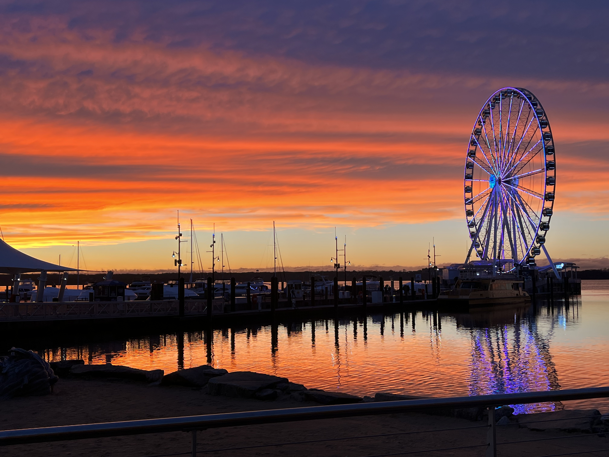

I love photography!
Recently, I had the opportunity to visit Inner Harbor and I knew I had to bring my camera along. The colors, the textures, and the energy of the place were incredible, and I wanted to capture all of it. When I clicked the shutter and saw the resulting image, I knew I had something special. It perfectly encapsulated the beauty and vitality of Inner Harbor, and it reminded me why I love photography so much.
This is my mobilegraphy, look at this beautiful picture when sun goes down.
Click on the links above to learn more about each of my favorite things.
